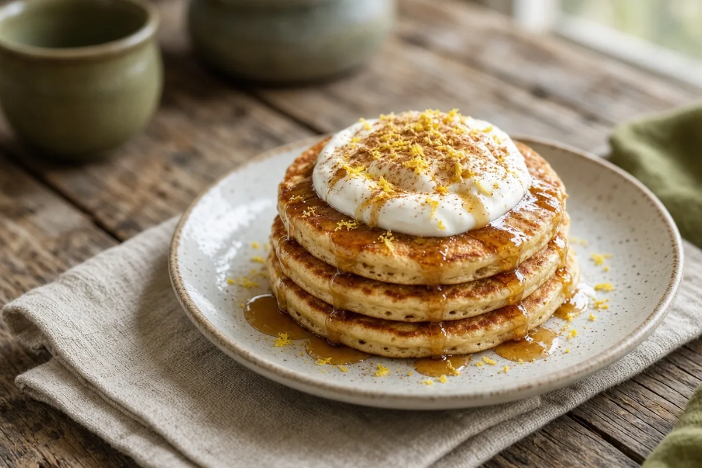

Member's Mark Protein Power-Up Pancakes
Member's Mark pancake mix boosted with whey protein, almond flour, Greek yogurt, and egg whites, brightened with cinnamon, nutmeg, and lemon zest.

2 servings
By
Yield: 2 servings
Prep:
Cook:
Total:
Difficulty: Easy
Ingredients
- 1 cup Member's Mark Buttermilk Pancake Mix
- 2 Tbsp almond flour
- 1 scoop (30 g) vanilla or unflavored whey protein
- 1 Tbsp ground flaxseed or hemp hearts, optional
- 1/2 cup plain Greek yogurt (nonfat or 2%)
- 1/2 cup egg whites (liquid, or from about 4 large eggs)
- 1/4 cup water or almond milk, plus more as needed
- 1 tsp vanilla extract
- 1/2 tsp cinnamon
- Pinch of freshly grated nutmeg
- 1 tsp lemon zest
- Butter, for the griddle
Instructions
- Whisk the pancake mix, whey protein, almond flour, flaxseed, cinnamon, and nutmeg in a medium bowl, breaking up any clumps of protein.
- In another bowl, whisk the Greek yogurt, egg whites, vanilla, and lemon zest until smooth.
- Make a well in the dry mix, pour in the yogurt mixture and the water, and whisk gently just until the streaks of flour disappear. If it's too thick to pour, add water a tablespoon at a time.
- Heat a griddle to 375°F (medium-high) and swipe it with butter; it should sizzle without browning right away.
- Pour 1/3 cup batter per pancake. Cook until small bubbles appear and the edges look matte, about 3 minutes, then flip and cook 2 minutes more.
Notes: These are denser than plain mix pancakes, so if the outsides brown before the centers set, turn the heat down a notch. Don't overmix; the yogurt and egg whites keep them fluffy.